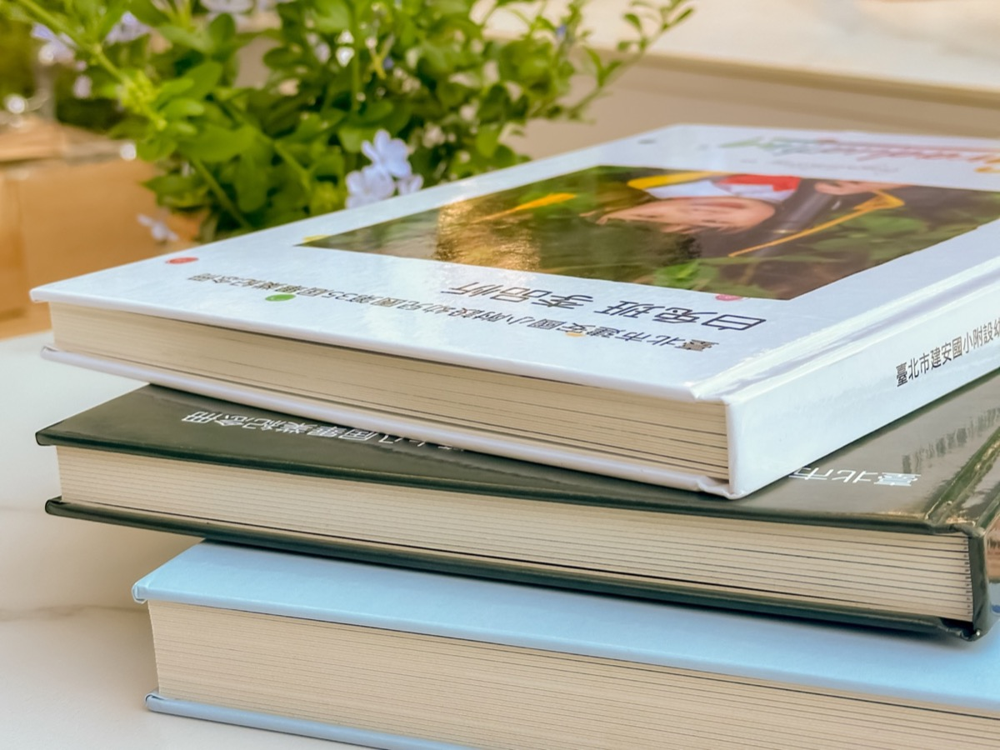
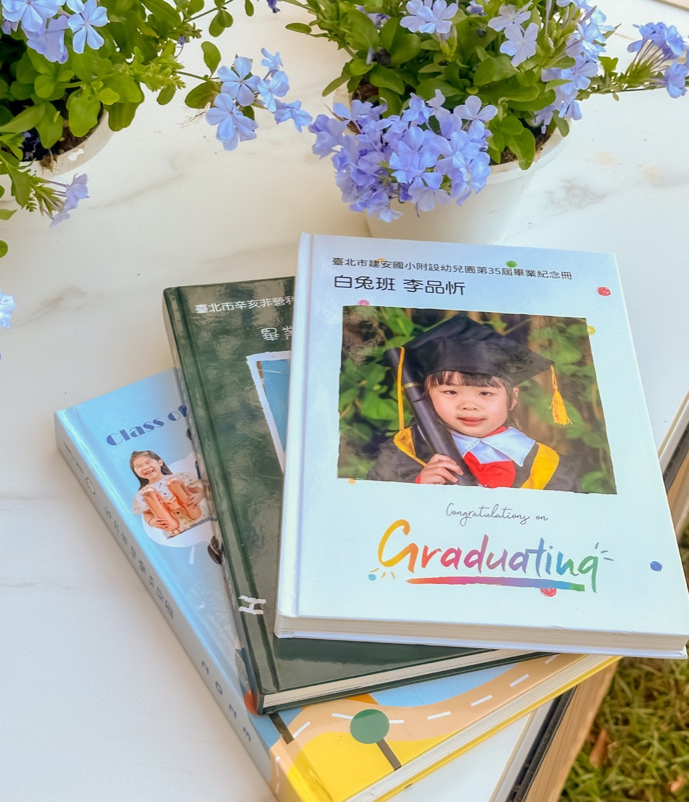
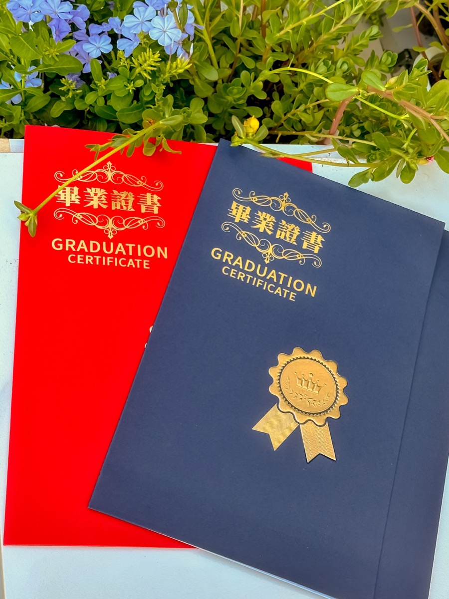
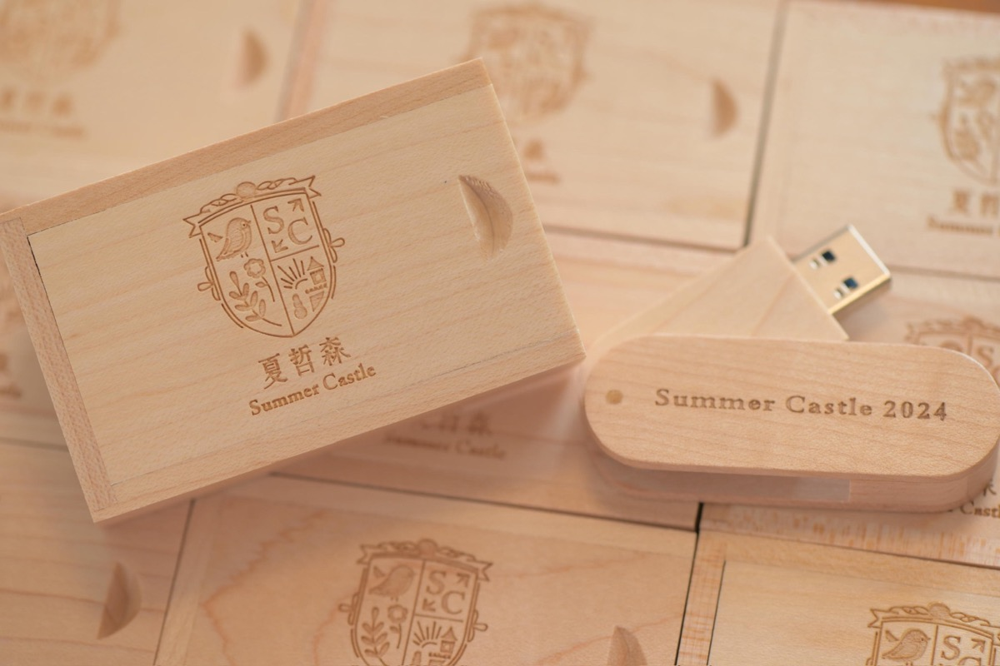

幼兒園畢業照
畢業紀念冊製作說明
除了畢業照拍攝，我們也提供畢業紀念冊設計與製作服務，希望讓紀念冊不只是照片集合，而是記錄孩子成長故事的一本回憶作品。
一、紀念冊尺寸與規格
常見規格為直式 A4，尺寸 21 × 29.7 cm，內頁 24 面／12 跨頁，每加 4 面為一個加價級距。
封面採厚紙硬皮搭配亮膜處理，內頁則為加厚銅西卡，翻閱時質感更紮實。
二、紀念冊內容安排
拍攝前會先一起確認頁數與整體內容方向。常見頁面包含封面學士照、封底班級照、大合照跨頁、芳名錄、個人學士服與便服頁面、上課與活動照片、小組互動照，以及由家長提供的家庭生活照。
實際拍攝張數會比入本張數多出 2～3 倍，方便在排版時挑選出最適合的畫面。
美編樣式下載連結（請挑選一款作為全校統一版型，設計師會依照片內容調整排版）。
三、排版方式
同一屆畢業生原則上會使用統一的版型，以維持整體風格與完成度。拍攝前可先從我們提供的美編樣式中挑選一款作為基礎，再由設計師依實際照片內容微調排版。
美編樣式下載連結 可供老師與家長先行參考與討論。
四、校稿流程
為了讓校稿更有效率，我們通常會先挑選 1 位畢業生製作樣本相本。樣本排版完成後，由學校窗口進行校稿與修改，定稿後其餘學生則依同一版型套版製作，不再逐一本別校稿。
若希望在畢業典禮前拿到紀念冊，建議預留充足的校稿時間；如因校稿延誤導致無法如期完成，恕無法歸因於攝影團隊。
五、樣本製作方式
拍攝完成後，我們會提供雲端連結，供學校下載所有照片。建議使用電腦完整下載，避免因手機或通訊軟體壓縮影像品質。選定樣本學生並整理好照片後，我們會進行樣本相本設計與校稿，定稿後再請學校提供其餘學生的個人頁面照片。
六、印刷與交件方式
所有相本完成排版並確認後，會送交合作印刷廠製作，成品完成後再寄送至學校或指定收貨地點。
製作時間預估
- 拍攝完成後約 1 週：提供雲端下載與美編樣式參考。
- 約 2 週：學校下載照片並挑選樣本學生。
- 約 2 週：樣本相本排版與校稿確認。
- 約 1 週：學校提供其餘學生照片選擇名單。
- 約 1 週：完成所有相本排版、最終校稿與印刷。
整體約 7 週（依資料提供與校稿速度可能略有調整）。
七、常見問題
- 美編樣式以全校統一為原則，並非每位學生各選一款，避免整體風格過於零碎。
- 家長提供的家庭照建議使用原始檔案，解析度至少 1MB 以上，避免從通訊軟體轉傳造成畫質壓縮。
- 修圖可協助處理蚊蟲叮咬或輕微受傷等小細節，胎記可適度淡化，無法保證完全去除，也不會大幅更動五官或表情。
- 若由家長代表統籌資料，整體收集與確認時間通常會拉長，建議預留更多製作期。
八、成品與加購項目參考
以下為畢業紀念冊實體、證書夾與木質隨身碟等成品示意，實際加購內容可搭配方案與價格頁面一併參考。
畢業紀念冊實體介紹



證書夾實體介紹


木質隨身碟